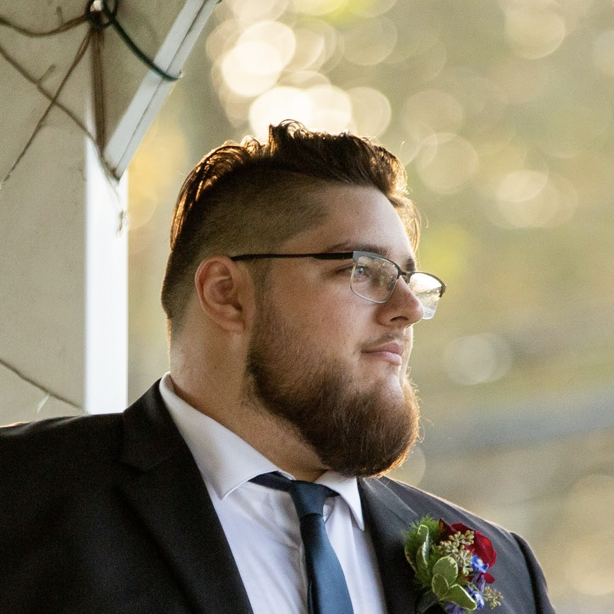

Who is Walter?
Musician > Customer Support Pro > Developer.
With 10+ years of experience in Customer Support, I've learned a thing or two about working with people. No matter what I do, I aim to make who I am working with to have the best experience possible.
I've worn a lot of different hats in various industries over the years (Retail, Automotive, Logistics, SaSS, etc.) and I've taken bits and pieces of those experiences to shape my work ethic and ideals.
Unfortunately, I have found myself a bit stuck with where I am at and have decided to turn my hobby and passion for technology into a career change. I have recently been learning Web Development and am loving it.
Please take a look at my Projects to see what I'm working on or visit my Contact page for where to find me!